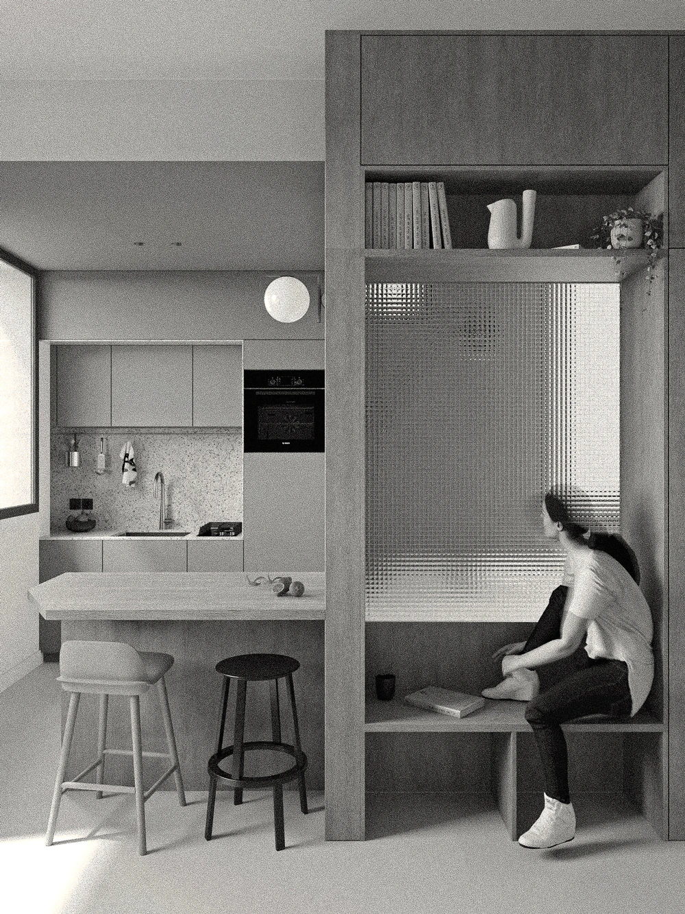

VISU VISU
FR
/
EN
Image creation for architecture, scenography and design projects. Visu Visu helps you represent your projects, from 3D modelling to photorealistic, textured renderings.
Victor Mauro
contact@victormauro.fr
Mauro, Turcon, 2021

Emmanuelle Lainé, Méjanes, 2025
Protoclub, EMT_02, 2025
Protoclub, EMT_01, 2025
Aimko.P, main lounge, 2024
Aimko.P, small lounge, 2023
Aimko.P, concept store, 2023
Atelier Aïno, BMT, with Lambert David, 2023
CT&GP, 55MPC, 2023
Atelier Philippe Parreno, Sharjah, 2022
CT&GP, Enso, 2022
Radar, Pulse, 64Hz, 2022
Emmanuelle Lainé, Chelles station, 2022
CT&GP, Vérandah, 2022
Alpha Immo, Communica, 2022
Alpha Immo, Communica, reception hall, 2022
Mauro, Rigaud, bathroom, 2022
Mauro, Turcon, 2021
Mauro, Turcon, 2021
Pello, 9RR, dining room, 2021
Pello, 9RR, bridal suite, 2021
Pello, 9RR, outbuilding, 2021
Mauro, Sabater, pergola, 2020
Mauro, Sabater, pergola, 2020
David Leininger, Abri, 2020
David Leininger, Abri, 2020
Nowatt Lighting, Onyx, wood version, 2020